import matplotlib.pyplot as plt
from sklearn.metrics import ConfusionMatrixDisplay
clf.fit(X_train, y_train)
ConfusionMatrixDisplay.from_estimator(clf, X_test, y_test, cmap=plt.cm.Blues)
plt.show()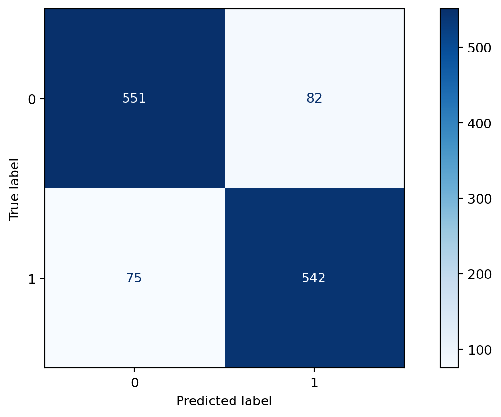
Spring 2024
Confusion Matrices and ROC Curves
Visual Analytics Systems for Model Performance
Calibration
Consider a disease prediction model. Suppose the hypothetical disease has a 5% prevalence in the population
The given model converges on the solution of predicting that nobody has the disease (i.e., the model predicts “0” for every observation)
Our model is 95% accurate
Yet, public health officials are stumped
Consider a model to identify handwritten digits. All digits are equally probable and equally represented in the training and test datasets.
The model correctly identifies all of the digits, except for digit \(5\), classifying half of the \(5\)s samples as \(6\) and the other half is correctly identified
The accuracy of this model is \(95\%\). Is this information enough to determine whether the model is good or not?

Pros
Cons
ROC analysis is another way to assess a classifier’s output
ROC analysis developed out of radar operation in the second World War, where operators were interested in detecting signal (enemy aircraft) versus noise
We create an ROC curve by plotting the true positive rate (TPR) against the false positive rate (FPR) at various thresholds
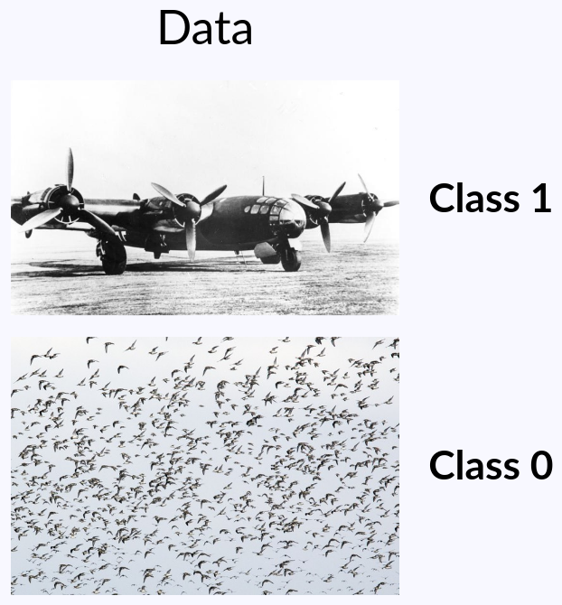
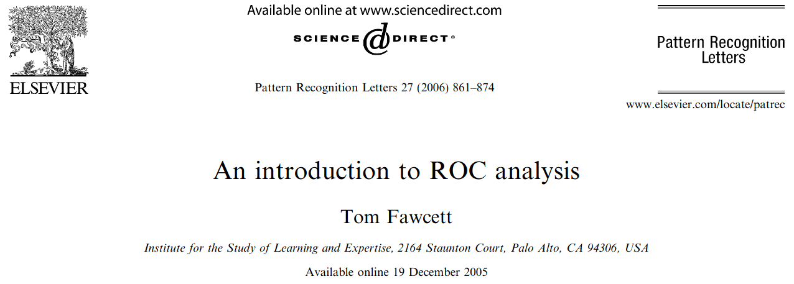
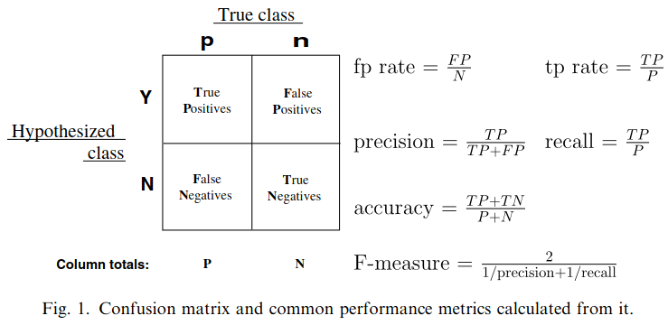
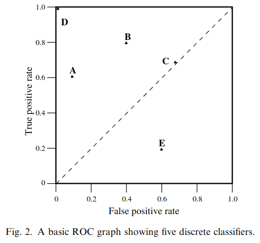
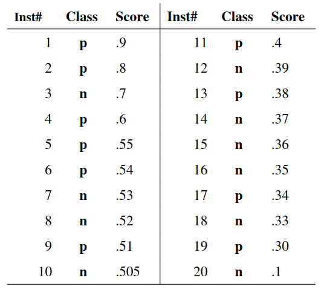
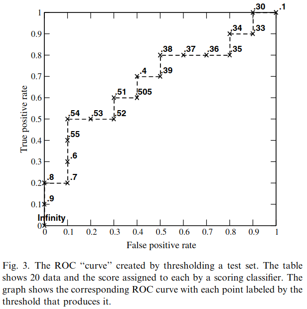

Micro-average: Aggregate contributions of all classes to calculate the metric. Useful if there is class imbalance.
Macro-average: Compute the metric for each class separately, then take average (treats all classes equally)
Ren, D., Amershi, S., Lee, B., Suh, J., & Williams, J. D. (2016). Squares: Supporting interactive performance analysis for multiclass classifiers. IEEE transactions on visualization and computer graphics.
Alsallakh, B., Hanbury, A., Hauser, H., Miksch, S., & Rauber, A. (2014). Visual methods for analyzing probabilistic classification data. IEEE transactions on visualization and computer graphics.
Alsallakh, B., Hanbury, A., Hauser, H., Miksch, S., & Rauber, A. (2014). Visual methods for analyzing probabilistic classification data. IEEE transactions on visualization and computer graphics.
Beauxis-Aussalet, E., & Hardman, L. (2014). Visualization of confusion matrix for non-expert users. In IEEE Conference on Visual Analytics Science and Technology (VAST)-Poster Proceedings.
Beauxis-Aussalet, E., & Hardman, L. (2014). Visualization of confusion matrix for non-expert users. In IEEE Conference on Visual Analytics Science and Technology (VAST)-Poster Proceedings.
Talbot, J., Lee, B., Kapoor, A., & Tan, D. S. (2009, April). EnsembleMatrix: interactive visualization to support machine learning with multiple classifiers. In Proceedings of the SIGCHI conference on human factors in computing systems.
When performing classification, we often are interested not only in predicting the class label, but also in the probability of the output
This probability gives us a kind of confidence score on the prediction
However, a model can separate the classes well (having a good accuracy/AUC), but be poorly calibrated. In this case, the estimated class probabilities are far from the true class probabilities
We can calibrate the model, changing the scale of the predicted probabilities
Weather forecasters started thinking about calibration a long time ago (Brier, 1950): a forecast of “70% chance of rain” should be followed by rain 70% of the time. Let’s consider a small toy example:
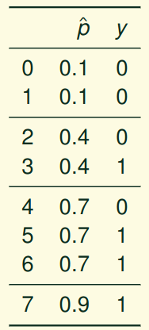
This forecast is doing at predicting the rain:
Slides based on classifier-calibration.github.io
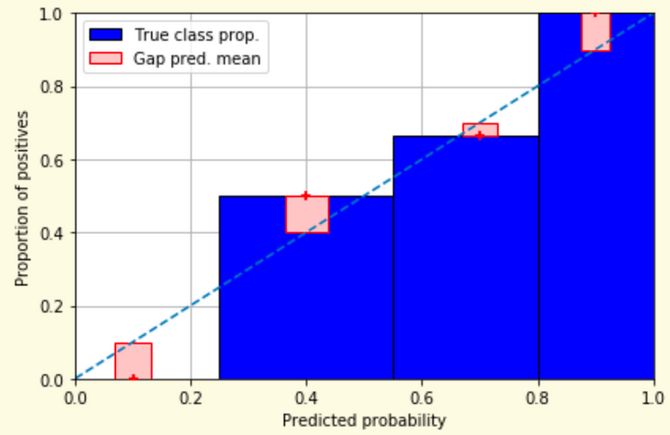
Slides based on classifier-calibration.github.io
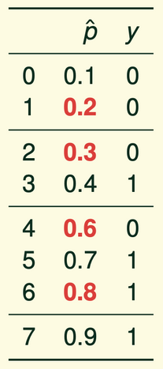
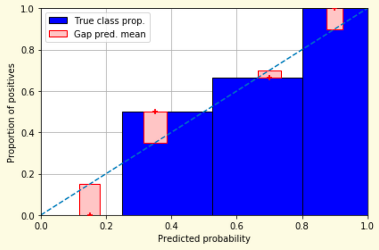
Slides based on classifier-calibration.github.io
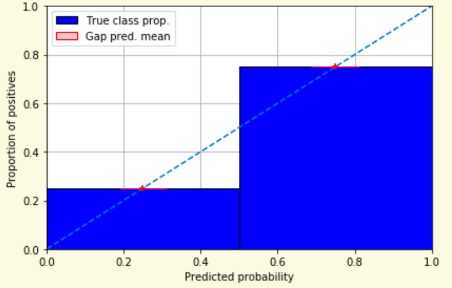
Slides based on classifier-calibration.github.io
Underconfidence: a classifier thinks it’s worse at separating classes than it actually is.
Overconfidence: a classifier thinks it’s better at separating classes than it actually is
A classifier can be overconfident for one class and underconfident for the other
Slides based on classifier-calibration.github.io
Let \(N\) be the total of samples, \(B\) the number of binds, \(n^b\) the samples in bin \(b\), and \(conf(b)\) the average predicted probability in bin \(b\).
\[ECE = \sum_{b=1}^B \frac{n^b}{N}|acc(b) - conf(b)|\]
\[MCE = \underset{m \in \{1,2,\dots,|B|\}}{\text{max}} |acc(b) - conf(b)|\]
Image taken from Guo, C., Pleiss, G., Sun, Y., & Weinberger, K. Q. (2017, July). On calibration of modern neural networks. In International Conference on Machine Learning. PMLR.
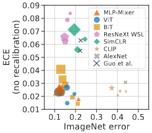
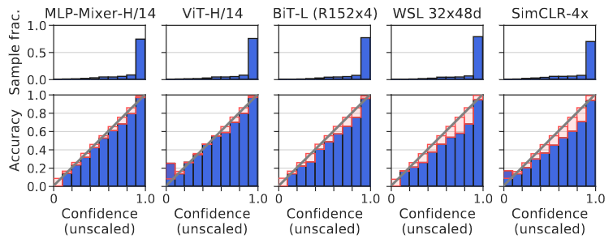
Image taken from Minderer, Matthias, et al. (2021). Revisiting the calibration of modern neural networks. Advances in Neural Information Processing Systems.
Proper scoring rules are calculated at the observation level, where as ECE is binned
Think of them as putting each item in its separate bin, then computing the average of some loss for each predicted probability and its corresponding observed label
Slides based on classifier-calibration.github.io
\[BS = \frac{1}{N} \sum_{i=1}^N (\hat{y}_i - y_i)^2\]
Log-loss/Cross entropy:
Frequently used to as the training loss of machine learning methods, such as neural networks
Only penalises the probability given to the true class
\[LL = -\frac{1}{N} \sum_{i=1}^N [y_i \text{log}(\hat{y}_i) + (1-y_i)\text{log}( 1 - \hat{y}_i)]\]
Slides based on classifier-calibration.github.io
An intuitive way to decompose proper scoring rules is into refinement and calibration losses
Refinement loss: is the loss due to producing the same probability for instances from different classes
Calibration loss: is the loss due to the difference between the probabilities predicted by the model and the proportion of positives among instances with the same output
Slides based on classifier-calibration.github.io
Parametric calibration involves modelling the score distributions within each class
Platt scaling: Logistic calibration can be derived by assuming that the scores within both classes are normally distributed with the same variance (Platt, 2000)
Beta calibration: employs Beta distributions instead, to deal with scores already on a [0, 1] scale (Kull et al., 2017)
Dirichlet calibration for more than two classes (Kull et al., 2019)
Non-parametric calibration often ignores scores and employs ranks
Slides based on classifier-calibration.github.io
\[p(y_i = 1 | \hat{y}_i) = \frac{1}{1 + exp(\mathbf{A}\hat{y}_i + \mathbf{b})}\]
Works best if the calibration error is symmetrical (classifier output for each binary class is normally distributed with the same variance)
This can be a problem for highly imbalanced classification problems, where outputs do not have equal variance
In general it is most effective when the un-calibrated model is under-confident and has similar calibration errors for both high and low outputs
Fits a non-parametric isotonic regressor, which outputs a step-wise non-decreasing function
Isotonic regression is more general when compared to Platt scaling, as the only restriction is that the mapping function is monotonically increasing
Is more powerful as it can correct any monotonic distortion of the un-calibrated model
However, it is more prone to overfitting, especially on small datasets
Reliability diagrams are a standard way to visualize calibration
ECE is a summary of what reliability diagrams show
Proper scoring rules (Log loss, Brier score) measure different aspects of probability correctness
However, proper scoring rules cannot tell us where a model is miscalibrated
Image taken from Xenopoulos, P., Rulff, J., Nonato, L. G., Barr, B., & Silva, C. (2022). Calibrate: Interactive analysis of probabilistic model output. IEEE Transactions on Visualization and Computer Graphics.
Xenopoulos, P., Rulff, J., Nonato, L. G., Barr, B., & Silva, C. (2022). Calibrate: Interactive analysis of probabilistic model output. IEEE Transactions on Visualization and Computer Graphics.
Xenopoulos, P., Rulff, J., Nonato, L. G., Barr, B., & Silva, C. (2022). Calibrate: Interactive analysis of probabilistic model output. IEEE Transactions on Visualization and Computer Graphics.
Xenopoulos, P., Rulff, J., Nonato, L. G., Barr, B., & Silva, C. (2022). Calibrate: Interactive analysis of probabilistic model output. IEEE Transactions on Visualization and Computer Graphics.
Błasiok, J., & Nakkiran, P. (2023). Smooth ECE: Principled Reliability Diagrams via Kernel Smoothing. arXiv preprint arXiv:2309.12236.
Błasiok, J., & Nakkiran, P. (2023). Smooth ECE: Principled Reliability Diagrams via Kernel Smoothing. arXiv preprint arXiv:2309.12236.
Image taken from Vaicenavicius, Juozas, et al. Evaluating model calibration in classification. The 22nd International Conference on Artificial Intelligence and Statistics. PMLR, 2019.
Niculescu-Mizil, A., & Caruana, R. (2005, August). Predicting good probabilities with supervised learning. In Proceedings of the 22nd international conference on Machine learning (pp. 625-632).
Nixon, J., Dusenberry, M. W., Zhang, L., Jerfel, G., & Tran, D. (2019, June). Measuring Calibration in Deep Learning. In CVPR Workshops (Vol. 2, No. 7).
Guo, C., Pleiss, G., Sun, Y., & Weinberger, K. Q. (2017, July). On calibration of modern neural networks. In International Conference on Machine Learning (pp. 1321-1330). PMLR.
Vaicenavicius, J., Widmann, D., Andersson, C., Lindsten, F., Roll, J., & Schön, T. (2019, April). Evaluating model calibration in classification. In The 22nd International Conference on Artificial Intelligence and Statistics (pp. 3459-3467). PMLR.
Kull, M., & Flach, P. (2015, September). Novel decompositions of proper scoring rules for classification: Score adjustment as precursor to calibration. In Joint European Conference on Machine Learning and Knowledge Discovery in Databases (pp. 68-85). Springer, Cham.
ECML/PKDD 2020 Tutorial: Evaluation metrics and proper scoring rules